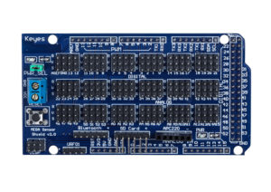
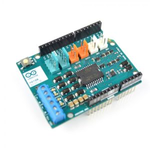

Arduino Shields – платы расширения для ардуино
Одним из ключевых преимуществ платформы Arduino является популярность. Популярную платформу активно поддерживают производители электронных устройств, выпускающие специальные версии различных плат, расширяющих базовую функциональность контроллера. Такие платы, совершенно логично называемые платами расширения (другое название: arduino shield, шилд), служат для выполнения самых разнообразных задач и могут существенно упростить жизнь ардуинщика. В этой статье мы узнаем, что такое плата расширения Arduino и как ее можно использовать для работы с разнообразными устройствами Arduino: двигателями (шилды драйверов двигателей), LCD-экранами (шилды LCD), SD-картами (data logger), датчиками (sensor shield) и множеством других.
Содержание [скрыть]
Плата расширения или Arduino shield?
Давайте сперва разберемся в терминах. Плата расширения Ардуино – это законченное устройство, предназначенное для выполнения определенных функций и подключаемое к основному контроллеру с помощью стандартных разъемов. Другое популярное название платы расширения – англоязычное Arduino shield или просто шилд. На плате расширения установлены все необходимые электронные компоненты, а взаимодействие с микроконтроллером и другими элементами основной платы происходят через стандартные пины ардуино. Чаще всего питание на шилд тоже подается с основной платы arduino, хотя во многих случаях есть возможность запитки с других источников. В любом шилде остаются несколько свободных пинов, которые вы можете использовать по своему усмотрению, подключив к ним любые другие компоненты.
Англоязычное слово Shield переводится как щит, экран, ширма. В нашем контексте его следует понимать как нечто, покрывающее плату контроллера, создающего дополнительный слой устройства, ширму, за которой скрываются различные элементы.
Все очень просто: 1) для того, чтобы мы экономили время, и 2) кто-то смог заработать на этом. Зачем тратить время, проектируя, размещая, припаивая и отлаживая то, что можно взять уже в собранном варианте, сразу начав использовать? Хорошо продуманные и собранные на качественном оборудовании платы расширения, как правило, более надежны и занимают меньше места в конечном устройстве. Это не значит, что нужно полностью отказываться от самостоятельной сборки и не нужно разбираться в принципе действия тех или иных элементов. Ведь настоящий инженер всегда старается понять, как работает то, что он использует. Но мы сможем делать более сложные устройства, если не будем каждый раз изобретать велосипед, а сосредоточим свое внимание на том, что до нас еще мало кто решал.
Естественно, за возможности приходится платить. Практически всегда стоимость конечного шилда будет выше цены отдельных комплектующих, всегда можно сделать аналогичный вариант подешевле. Но тут уже решать вам, насколько критично для вас потраченные время или деньги. С учетом посильной помощи китайской промышленности, стоимость плат постоянно снижается, поэтому чаще всего выбор делается в пользу использования готовых устройств.
Наиболее популярным примерами шилдов являются платы расширения для работы с датчиками, двигателями, LCD-экранами, SD-картами, сетевые и GPS-шилды, шилды со встроенными реле для подключения к нагрузке.
Для подключения шилда нужно просто аккуратно «надеть» его на основную плату. Обычно контакты шилда типа гребенки (папа) легко вставляются в разъемы платы ардуино. В некоторых случаях требуется аккуратно подправить штырки, если сама плата спаяна неаккуратно. Тут главное действовать аккуратно и не прилагаться излишней силы.
Как правило, шилд предназначен для вполне конкретной версии контроллера, хотя, например, многие шилды для Arduino Uno вполне нормально работают с платами Arduino Mega. Распиновка контактов на меге выполнена так, что первые 14 цифровых контактов и контакты с противоположной стороны платы совпадают с расположением контактов на UNO, поэтому в нее легко становится шилд от ардуино.
Программирование Arduino Shield
Программирование схемы с платой расширения не отличается от обычного программирования ардуино, ведь с точки зрения контроллера мы просто подключили наши устрйоства к его обычным пинам. В скетче нужно указывать те пины, которые соединены в шилде с соответствующими контактами на плате. Как правило, производитель указывает соответствие пинов на самом шилде или в отдельной инструкции по подключению. Если вы скачаете скетчи, рекомендованные самим производителем платы, то даже это делать не понадобится.
Чтение или запись сигналов шилдов производится тоже обычным методом: с помощью функций analogRead (), digitalRead (), digitalWrite () и других, привычных любому ардуинщику команд. В некоторых случаях возможны коллизии, когда вы привыкли к оной схеме соединения, а производитель выбрал другую (например, вы подтягивали кнопку к земле, а на шилде – к питанию). Тут нужно быть просто внимательным.
Как правило, эта плата расширения идет в наборах ардуино и поэтому именно с ней ардуинщики встречаются чаще всего. Шилд достаточно прост – его основная задача предоставить более удобные варианты подключения к плате Arduino. Это осуществляется за счет дополнительных разъемов питания и земли, выведенных на плату к каждому из аналоговых и цифровых пинов. Также на плате можно найти разъемы для подключения внешнего источника питания (для переключения нужно установить перемычки), светодиод и кнопка перезапуска. Варианты шилда и примеры использования можно найти на иллюстрациях.

Существует несколько версий сенсорной платы расширения. Все они отличаются количеством и видом разъемов. Наиболее популярными сегодня являются версии Sensor Shield v4 и v5.
Данный шилд ардуино очень важен в робототехнических проектах, т.к. позволяет подключать к плате Arduino сразу обычный и серво двигатели. Основная задача шилда – обеспечить управление устройствами потребляющими достаточно высокий для обычной платы ардуино ток. Дополнительным возможностями платы является функция управления мощностью мотора (с помощью ШИМ) и изменения направления вращения. Существует множество разновидностей плат motor shield. Общим для всех них является наличие в схеме мощного транзистора, через который подключается внешняя нагрузка, теплоотводящих элементов (как правило, радиатора), схемы для подключения внешнего питания, разъемов для подключения двигателей и пины для подключения к ардуино.

Организация работы с сетью – одна из самых важных задач в современных проектах. Для подключения к локальной сети через Ethernet существует соответствующая плата расширения.
Платы расширения для прототипирования
Эти платы достаточно просты – на них расположены контактные площадки для монтажа элементов, выведена кнопка сброса и есть возможность подключения внешнего питания. Предназначение данных шилдов – повысить компактность устройства, когда все необходимые компоненты располагаются сразу над основной платой.
Arduino LCD shield и tft shield
Данный тип шилдов используется для работы с LCD-экранами в ардуино. Как известно, подключение даже самого простого 2-строчного текстового экрана далеко не тривиальная задача: требуется правильно подключить сразу 6 контактов экрана, не считая питания. Гораздо проще вставить готовый модуль в плату ардуино и просто загрузить соответствующий скетч. В популярном LCD Keypad Shield на плату сразу заведены от 4 до 8 кнопок, что позволяет срзау организовать и внешний интерфейс для пользователя устройства. TFT Shield также помогает
Еще одна задача, которую достаточно трудно реализовывать самостоятельно в своих изделиях – это сохранение данных, полученных с датчиков, с привязкой по времени. Готовый шилд позволяет не только сохранить данные и получать время со встроенных часов, но и подключить датчики в удобном виде путем пайки или на монтажной плате.
В этой статье мы с вами рассмотрели только небольшую часть огромного ассортимента всевозможных устройств, расширяющих функциональность ардуино. Платы расширения позволяют сосредоточиться на самом главном – логике вашей программы. Создатели шилдов предусмотрели правильный и надежный монтаж, необходимый режим питания. Все, что вам остается, это найти нужную плату, используя заветное английское слово shield, подключить ее к ардуино и загрузить скетч. Обычно любое программирование шилда заключается в выполнении простых действий по переименованию внутренних переменных уже готовой программы. В итоге мы получаем удобство в использовании и подключении, а также быстроту сборки готовых устройств или прототипов.
Минусом использования плат расширения можно назвать их стоимость и возможный потери эффективности из-за универсальности шилдов, лежащей в их природе. Для вашей узкой задачи или конечного устройства все функции шилда могут быть не нужны. В таком случае стоит использовать шилд только на этапе макетирования и тестирования, а при создании финального варианта своего устройства задуматься о замене конструкцией с собственной схемой и типом компоновки. Решать вам, все возможности для правильного выбора у вас есть.
Микроконтроллер ESP32 и проекты Arduino
Arduino Pro Mini – распиновка и подключение
Плата Arduino Leonardo: описание, схема, подключение и сравнение
Прошивка esp8266 через Arduino IDE
Загрузчик Ардуино и прошивка через Arduino IDE и программатор